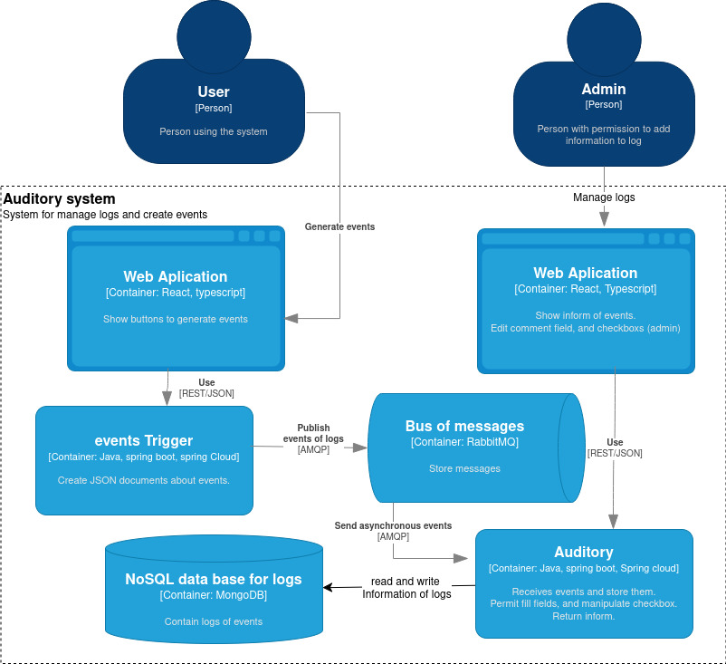
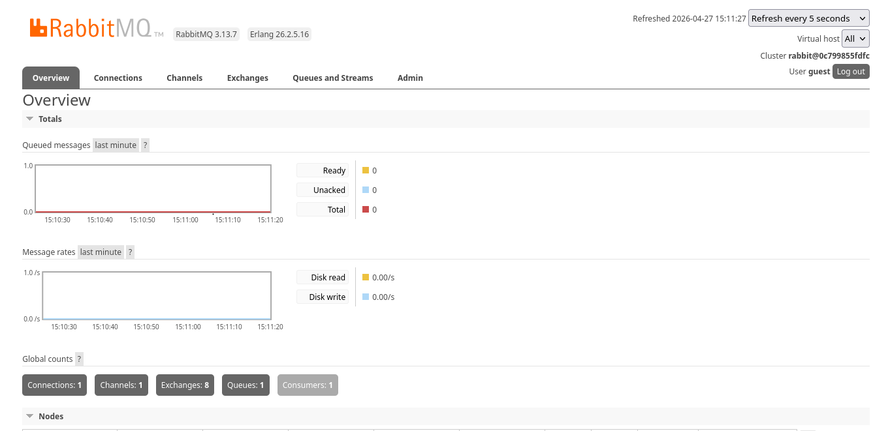

Visualización de Arquitectura Nivel 2 (C4 Model)
Diseño orientado a la comunicación basada en eventos, garantizando el desacoplamiento total entre el emisor y el receptor.
El Desafío
Comunicación Asíncrona y Resiliencia
El reto principal consistió en implementar un sistema de mensajería que permitiera al servicio emisor delegar la carga de logs sin bloquear su flujo principal. Era fundamental asegurar que el sistema fuera resiliente: si el consumidor no está disponible, los eventos deben persistir en el broker hasta su procesamiento.
Implementación Técnica
Configuré la infraestructura de mensajería mediante Queue, Exchange y Bindings para establecer un flujo de datos robusto:
- 01. Definición de infraestructura de mensajería y serialización JSON en el servicio consumidor.
- 02. Uso de RabbitTemplate para la publicación eficiente de eventos desde el productor.
- 03. Implementación de un Listener asíncrono para el procesamiento y persistencia en MongoDB al recibir mensajes.
Funcionamiento del Sistema
Pruebas de integración y monitoreo de flujos asíncronos.

Gestión de Mensajería
Monitoreo de colas y tráfico de eventos mediante el panel administrativo de RabbitMQ.

Documentación con Swagger
Interfaz interactiva para realizar pruebas rápidas y documentar los endpoints de los microservicios.
Tecnologías Aplicadas
Spring Boot & MongoDB
Integración con Spring Data para la gestión de persistencia no relacional y auditoría escalable de logs.
RabbitMQ
Orquestación de eventos asíncronos para garantizar el desacoplamiento total y la tolerancia a fallos entre servicios.
Dockerization
Contenerización completa del ecosistema (App, Broker y DB) para asegurar portabilidad y consistencia.